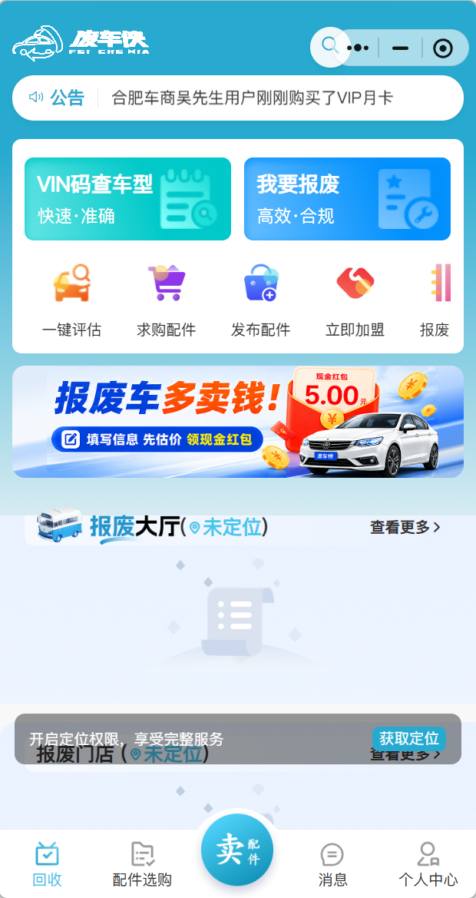
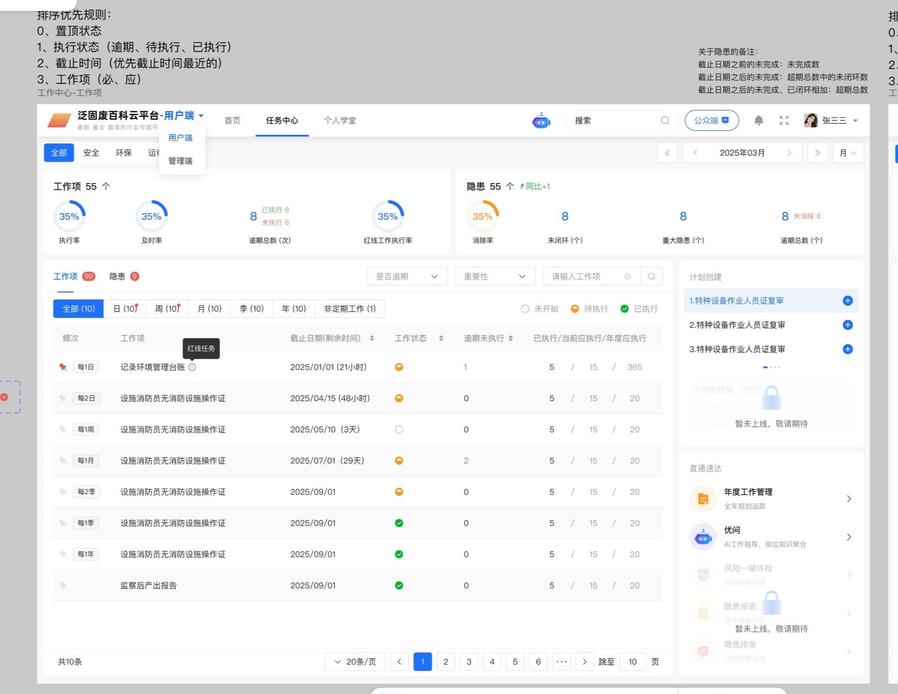

01 汽车后市场
C 端 + B 端 SaaS / 业务线上化
废车侠
用车源、线索、配件、会员和代理商分佣串起“供给—转化—交易—收益”闭环。

MOBILE / ROLE-BASED FLOW
2,000+沉淀报废车线索
88%线索转化率
16万配件交易 GMV
REQUIREMENT ANALYSIS / PRODUCT
面向产业客户的需求分析与产品经理。擅长调研访谈、业务流程梳理、AI 辅助分析，以及从 PRD 到验收培训的完整落地。
把需求听懂、把流程画清、把产品交付到现场。
02 / PROJECT ARCHIVE
从移动端业务闭环，到企业 SaaS、AI 问答和工业物联网，以下案例展示我如何将多角色需求转化为可执行系统。
C 端 + B 端 SaaS / 业务线上化
用车源、线索、配件、会员和代理商分佣串起“供给—转化—交易—收益”闭环。

企业 SaaS / 任务与知识
拆解管理者、一线员工、培训人员链路，构建“任务闭环 + 知识赋能”，并落地 AI 智能问答。

IoT / 数据可视化 / 实施
把生产状态、温湿度、能源消耗与智慧控制汇入同一套可视化系统，支持现场管理和异常预警。
03 / FIELD NOTES
针对目标岗位，我把能力拆成四个可复用模块：从现场获得事实，用 AI 加速整理，再用流程和原型让团队达成共识。
通过角色访谈、操作跟随、客服反馈与数据核验，区分“用户说想要”与“业务真正卡住”。
用 Claude Code、ChatGPT 辅助整理会议纪要、需求初稿、FAQ 和反馈标签，把时间留给判断与沟通。
用 Axure、Visio、Figma 把角色、权限、状态、异常和数据流画成团队可执行的产品语言。
参与需求评审、研发协作、测试验收、用户培训和上线复盘，确保交付不是“做完”，而是“用起来”。
FIELD TO DELIVERY
我习惯把每次项目拆成可以复盘的交付链路，让客户、研发、测试和使用者在同一张图里看见进度。
04 / ABOUT
我本科就读于安徽科技学院设计学，之后在第三方软件研发公司持续参与企业数字化项目。设计训练让我关注表达与体验，产品实践让我学会用业务结果检验方案。
05 / EXPERIENCE
在不同产业现场中积累的需求感知与交付经验。
负责汽车后市场数字化产品，从车源发布、会员购买到配件交易和代理商后台落地。
参与数优战训、iMeIoT、iMeCMS 等企业软件项目，覆盖调研、设计、实施、验收与迭代。
以设计为基础建立信息组织、视觉表达和用户体验能力。